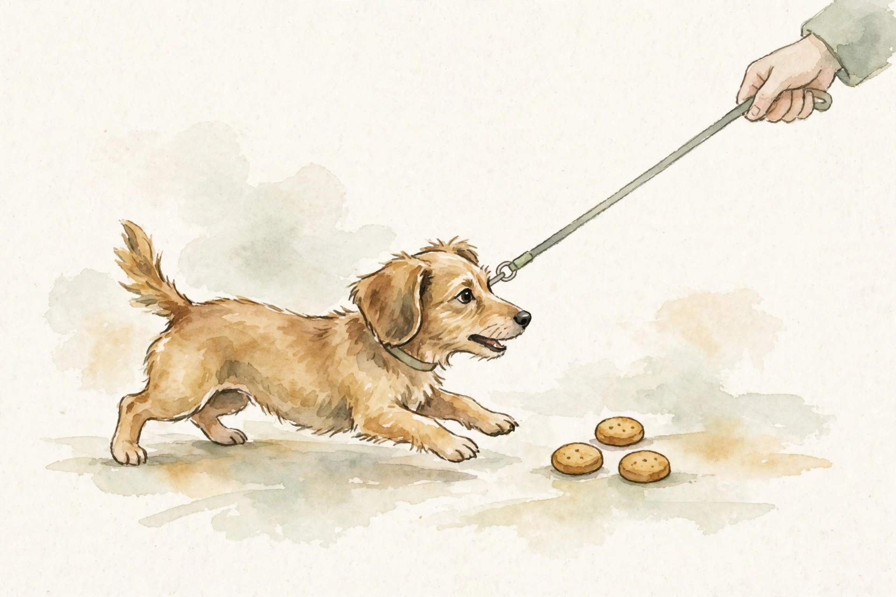
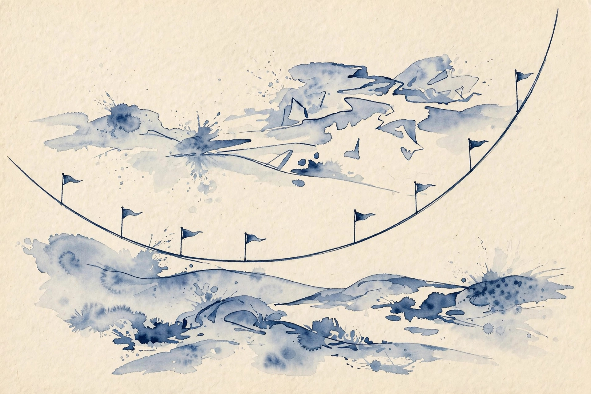

U05 · RLHF and DPO
How do human preferences become a language model? First a reward model learns to score responses like the annotators. Then the policy chases the reward on a KL leash. Then DPO skips the middleman and reads the reward off the policy itself. This unit derives each step and shows where each one lies.

Sourcing. No full transcript exists for sessions S08 and S09. This companion narrates content/v2/cs329h/lessons/u05_lesson.md. All twelve concepts are taught as independent theory: the lesson marks the sessions PLANNED and every concept PLANNED / SOURCE ATTRIBUTION PENDING.
How to read the tags. Every number carries its lesson section. Anything the companion computes is tagged Illustration. A Interpretation tag marks the companion's own reading of the lesson. Where the lesson leaves a value out, the page says so in words.
From the lesson A fact, number, or mechanism from the lesson.
Illustration Invented by the companion: an analogy, a toy with made-up values, or a what-if. Never lecture content.
Interpretation The companion's reading of why a lesson fact matters. The fact is the lesson's, the gloss is ours.
C01 · Contract 6 Points to the exact lesson section behind a claim or number.
Section 1 · C01, C02
From the lessonC01 · Contract 4, 5
Each record is a contest between two responses to the same prompt: (x, y_w, y_l), prompt x, winning response y_w, losing response y_l. Pairing on x removes prompt difficulty as a confound: the comparison is purely about response quality given x. This is why RLHF data is paired and not separate per-response ratings. A great answer to a hard prompt would otherwise rank below a mediocre answer to an easy prompt.
From the lessonC02 · Contract 3, 5, 6
The reward model is a Bradley-Terry score for responses: r(x, y) is the strength of response y to prompt x. Training pushes the winner's score above the loser's with the logistic loss on the margin: -log sigma(r(y_w) - r(y_l)). This is exactly the U01 engine with items as responses and the prompt as context. The lesson toy uses the tides pair with margin 1.5: loss 0.201. Margin 0 gives 0.693. Margin -1.5 gives 1.701. Lesson figure u05_f02 draws the falling loss curve.
From the lessonC02 · Contract 11
The reward model is a proxy. It fits the training pairs but may misjudge off-distribution responses. The policy later generates responses unlike anything in the reward training data, and the proxy's verdicts there are guesses wearing a score.
Pair on the prompt, or prompt difficulty becomes a confound the reward model cannot see.
Section 2 · C03, C04, C05, C06
From the lessonC03 · Contract 3, 5, 6
The RL objective is expected reward under the policy: J(pi) = E[r(x, y)]. Without a leash, all mass piles onto the single best response. The lesson toy with rewards [2, 1, 0]: the unconstrained optimum puts 1.0 on the first response for an expected reward of 2.0. The degenerate optimum is a feature of the math, not a bug in the code. This is why the KL leash exists.
From the lessonC04 · Contract 3, 5, 6
Beta is the price of deviating from the reference. The penalized objective is E[r] - beta KL(pi || pi_ref). High beta: stay close, modest reward. Low beta: chase reward, drift far. The lesson traces the frontier across six betas. Beta 0.2 gives KL 1.06 and reward 1.99. Beta 0.5 gives 0.66 and 1.85. Beta 1 gives 0.27 and 1.58. Beta 2 gives 0.08 and 1.32. Beta 5 gives 0.01 and 1.13. Beta 20 gives 0.00 and 1.03, approaching the uniform mean of 1.0. Lesson figure u05_f03 plots the full frontier.

From the lessonC05 · Contract 3, 5, 6
The optimum has a closed form. Maximize the penalized objective with a Lagrange multiplier and the answer falls out: pi*(y) proportional to pi_ref(y) exp(r(y)/beta). The optimum tilts the reference toward high reward. Small beta tilts hard. Large beta barely tilts. The lesson toy: beta 5 gives [0.40, 0.33, 0.27], a gentle tilt. Beta 0.5 gives [0.87, 0.12, 0.02], nearly greedy. Lesson figure u05_f04 draws both bar charts.
From the lessonC06 · Contract 3, 5, 6
The reference is home base: the model we trust, usually the SFT model. Everything is relative to it: the frontier, the tilt, the beta price. Change the reference and the whole frontier moves. With a uniform reference the beta-20 policy is [0.37, 0.33, 0.30]: it barely moves from uniform. The honest limit: a weak reference caps the policy. The leash pulls toward mediocrity if home base is mediocre.
The unconstrained optimum is degenerate. The KL leash is not a safety add-on. It is the objective.
The optimum tilts the reference: multiply by exp(r/beta), renormalize. The reference is the prior, beta is its strength.
Illustration Turn the beta dial on the lesson's three-response toy. The code computes the exact KL-constrained optimum from C05 in your browser.
5.0
Policy appears here.
From the lessonC05 · Contract 6 Rewards [2, 1, 0], uniform reference. At beta = 5 the readout must show about [0.40, 0.33, 0.27]. At beta = 0.5 about [0.87, 0.12, 0.02].
Section 3 · C07, C08
From the lessonC07 · Contract 3, 5, 6
DPO reads the reward off the policy itself. From the C05 optimum, solve for the reward: r(y) = beta log(pi*(y)/pi_ref(y)) + const. Plug this into the Bradley-Terry likelihood on a preference pair and the constants cancel. The reward model never appears. What remains is a logistic loss directly on the policy's log-ratios: -log sigma(beta log(pi(y_w)/pi_ref(y_w)) - beta log(pi(y_l)/pi_ref(y_l))). The implicit reward is beta times the log-ratio of policy to reference. Train the policy so the winner's implicit reward beats the loser's. The lesson toy: implicit margin 2.0 at beta 0.5 gives loss -log sigma(1.0) = 0.313. Margin 0 gives 0.693. Lesson figure u05_f05 draws the loss curve.
From the lessonC08 · Contract 3, 5
Two algorithms, one goal. PPO learns a reward model, then explores with it online. DPO skips the middleman and fits the policy to the pairs directly. PPO can discover. DPO can only distill. On the three-response toy both target the same closed-form optimum: beta 0.5 gives [0.87, 0.12, 0.02]. They differ in how they get there, not where. The comparison table from lesson figure u05_f06:
| PPO | DPO | |
|---|---|---|
| Objective | clipped surrogate | logistic on margins |
| Reward model | separate, trained | implicit in the policy |
| Sampling | online rollouts | offline pairs |
| KL control | penalty plus clip | beta |
| Stability | touchy | supervised-like |
| Cost | rollouts and tuning | one supervised pass |
From the lessonC08 · Contract 10, 11
The choice is about exploration versus simplicity. Choose PPO when the policy must venture beyond the data. Choose DPO when the pairs already cover the good region. The failure modes differ too: PPO with a hacked reward explores into the exploit, while DPO on narrow pairs never sees the exploit but also never discovers better responses.
DPO reads the reward off the policy. The constants cancel, the reward model disappears, and the loss is supervised.
Section 4 · C09, C10, C11
From the lessonC09 · Contract 3, 5, 6
Feedback bias is a thumb on the scale: position, length, sycophancy, or politeness push choices without reflecting true quality. The reward model learns the thumb, not just the quality. This is the U01 context effect applied to responses. If longer answers win 65 percent regardless of quality, the reward model learns longer is better with gap log(0.65/0.35) = 0.62 utils of pure bias. A truly better short answer needs a true gap above 0.62 just to break even. The fork: model the bias explicitly when deployment differs from annotation, or accept it when they match.
From the lessonC10 · Contract 3, 5, 6
The reward model is a proxy with blind spots. Optimization finds the blind spots: outputs that score high and disappoint humans. The proxy climbs. The truth peaks and falls. The lesson toy makes it numeric: proxy 0.1t, true 0.1t - 0.004t^2. At step 12 the true reward peaks at 0.62 while the proxy reads 1.2. At step 50 the true reward is -5.0 while the proxy reads 5.0. Lesson figure u05_f07 plots both curves. Goodhart's law in one line: when a measure becomes a target, it stops being a good measure.
When a measure becomes a target, it stops being a good measure. The proxy climbs while the truth peaks and falls.
From the lessonC09 · Contract 6, C11 · Contract 3, 6
The bias arithmetic has a sharp edge. Debiasing with the wrong sign doubles the bias: correcting a length effect that was actually quality makes things worse, not better. And offline data is a photograph of the past. The DPO identity assumes the policy sits at the KL-constrained optimum for the current reward. A shifted policy breaks the identity. The lesson's staleness toy: the old policy puts 0.5 on the winner, the current policy puts 0.9 there. The pair is now uninformative, the policy already prefers the winner, but DPO still pushes the margin. Wasted gradient on a decided contest. The fix is fresh data or iterative DPO: recollect periodically.
A biased margin is a thumb on the scale. 0.62 utils of pure bias means the truth needs 0.62 just to break even.
Section 5 · C12
From the lessonC12 · Contract 3, 5, 6
Disagreement is not always noise. Two annotators can both be right: one values conciseness, the other values thoroughness. The lesson's 4-annotator toy reports pairwise agreement 0.86, 0.90, 0.86, 0.88, 0.81, mean pairwise 0.80. High agreement on facts with taste-splitting on style is the signature of a diverse panel. Lesson figure u05_f08 draws the agreement matrix.
From the lessonC12 · Contract 10, 11
The majority-vote model averages away the minority: a 70/30 split becomes 100/0 in the training signal (illustrative example). The disagreement is a fact about the world, not a bug in the annotators. The lesson closes with four questions: which annotator, whose preference, which disagreement matters, and who gets to decide. The companion adds none. Those questions are the point.
Disagreement is not always noise. Taste-splitting on style is the signature of a diverse panel, and the majority vote averages it away.
Which annotator? Whose preference? Which disagreement matters? Who gets to decide? These are values, not theorems.
Wisdom index